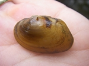
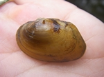

James spinymussel
 (Photos from U.S. Fish and Wildlife service)
(Photos from U.S. Fish and Wildlife service)Description
The adult James spinymussel is less than 76 mm with a dark brown shell and growth rings. They may have short spines. A younger specimen will have a yellow shell (Association).
Habitat and Location
In North Carolina it is found in Caswell, Rockingham, and Stokes counties. It is also found in Virginia and West Virginia. To be even more specific it lives in the James River drainage and the Dan and Mayo river systems within the Roanoke River (Services).
The river in which it lives is slow flowing. It is essential that the river is clean otherwise its feeding tube becomes clogged and the mussel starves to death (Association).
Reasons For Endangerment
One of the major reasons the James spinymussel is endangered is because of water population such as extra sediments and agricultural runoff. It is also being outcompeted by an invasive species known as Asiatic clam. It is currently being attempted to reintroduce the mussel back into the wild (Association).References
Association, James River. "Wildlife of the James - James Spinymussel." Today on the James:. James River Association, 01 Jan. 1970. Web. 27 Oct. 2016.
Service, U.S. Fish and Wildlife. "Species Profile for James Spinymussel (Pleurobema Collina)." Species Profile for James Spinymussel (Pleurobema Collina). U.S. Fish & Wildlife Service, n.d. Web. 27 Oct. 2016.